| Catalog | a0_002b0_009 |
|---|---|
| Author | Jaqcui Gilchrist, 2018/09/27 |
| Description | hold b-a constant, but change a and b: a=0.002, b=0.009 |
| Fault/Def Model | Fault Model 3.1, Geologic |
| Slip Velocity | 1.0 m/s |
| Average Element Area | 1.35 km^2 |
| Length | 9,285,521 events in 434,248 years |
| Frictional Params | a=0.002, b=0.009, (b-a)=0.007, ddotEQ=1 |
| Scatter | 2-D Hist |
|---|---|
| 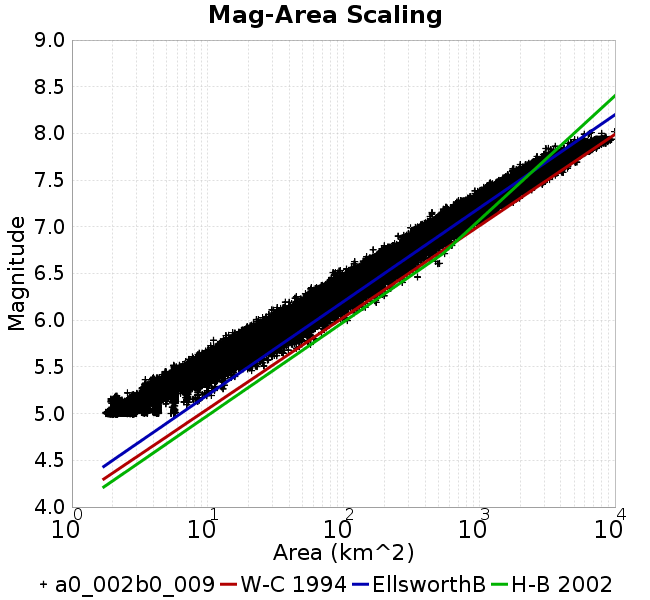 |  |
| Scatter | 2-D Hist |
|---|---|
| 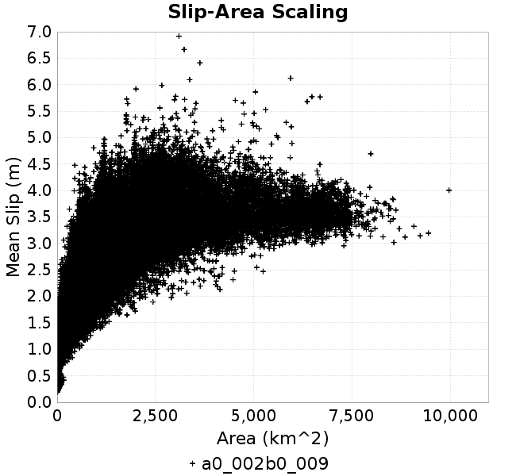 |  |
| Scatter |  |
|---|---|
| Distance/Velocity |  |
| M≥6 | M≥6.5 | M≥7 | M≥7.5 |
|---|---|---|---|
 | 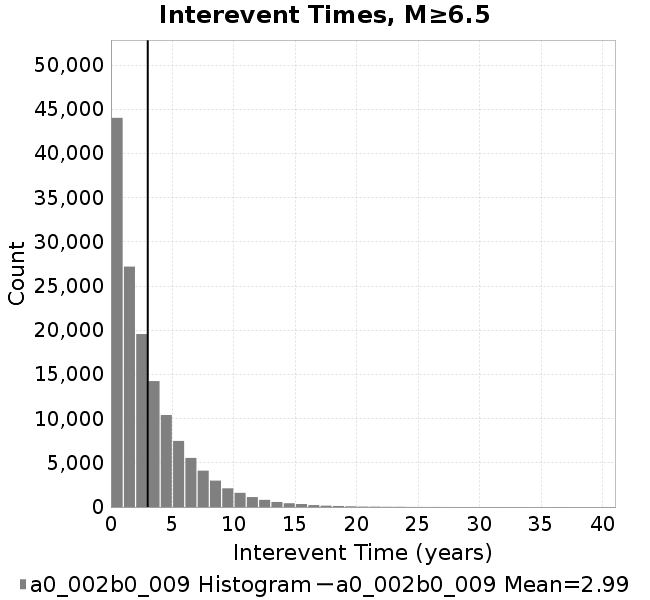 | 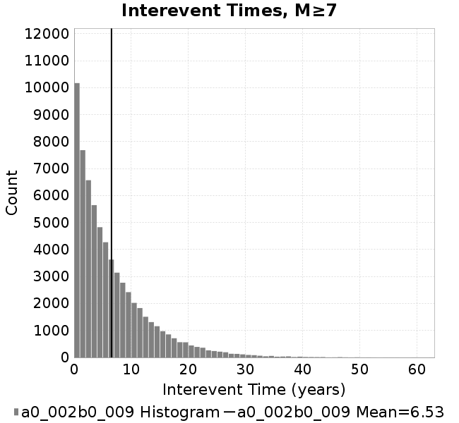 | 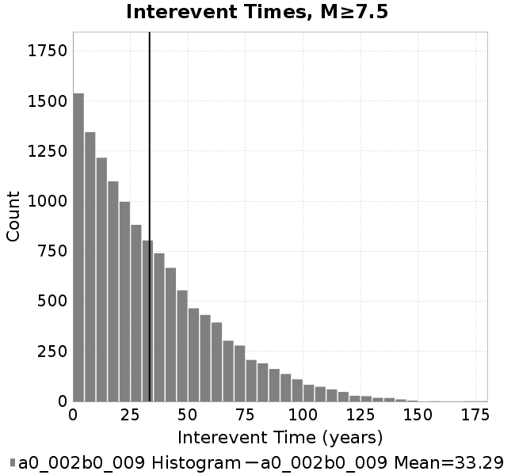 |
| M≥6 | M≥6.5 | M≥7 | M≥7.5 | |
|---|---|---|---|---|
| Elements |  | 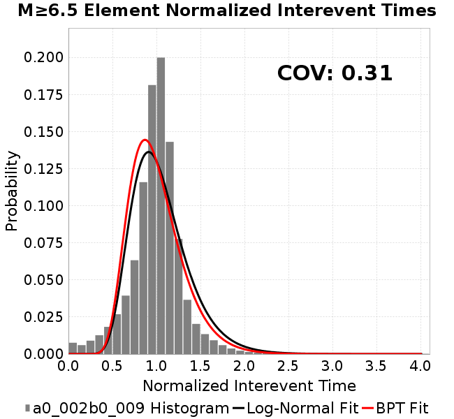 |  | 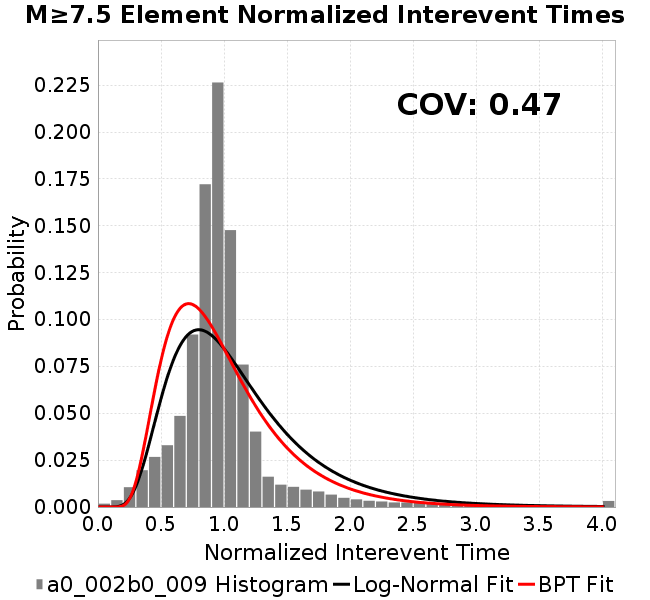 |
| Subsections |  |  | 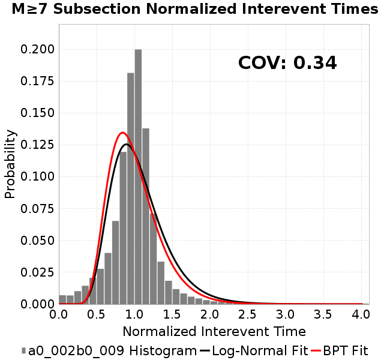 | 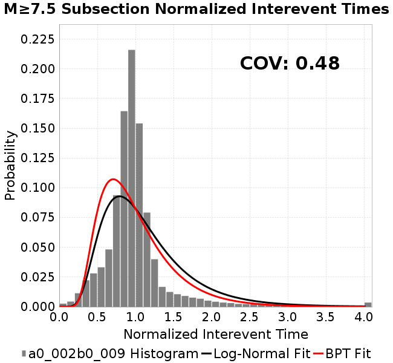 |
| Sections |  | 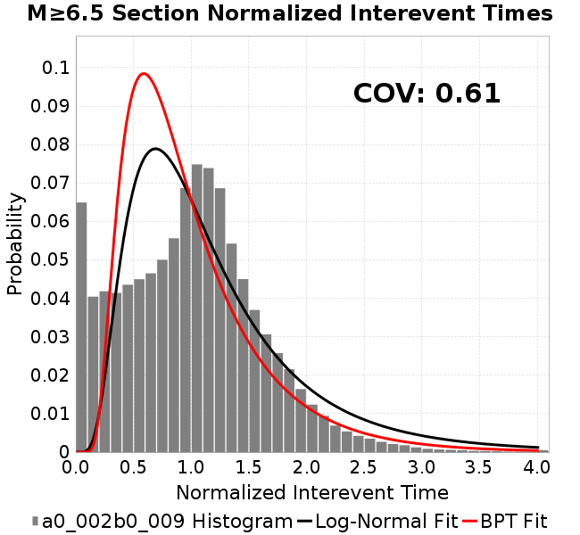 |  | 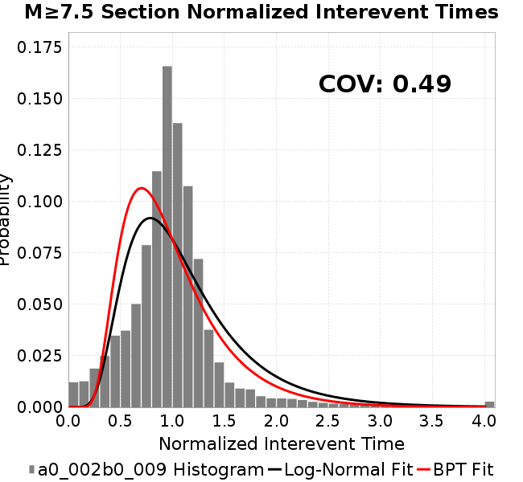 |
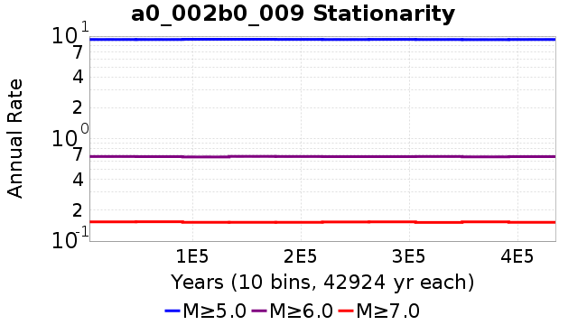
| Min Mag | Scatter | 2-D Hist |
|---|---|---|
| M≥6.0 |  |  |
| M≥6.5 | 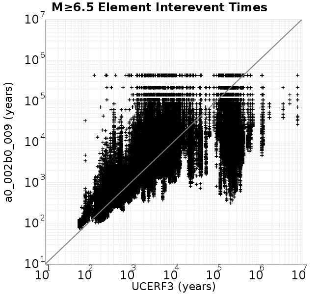 | 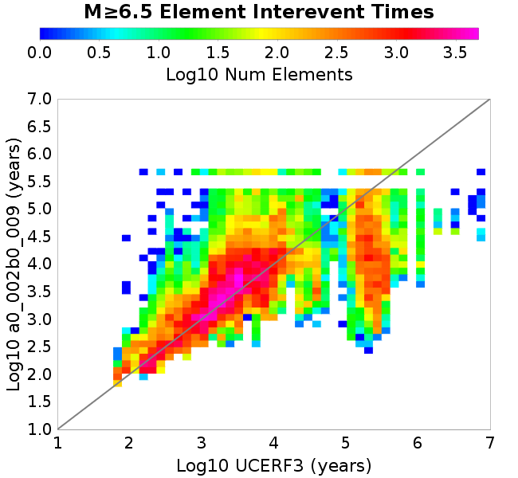 |
| M≥7.0 |  |  |
| M≥7.5 | 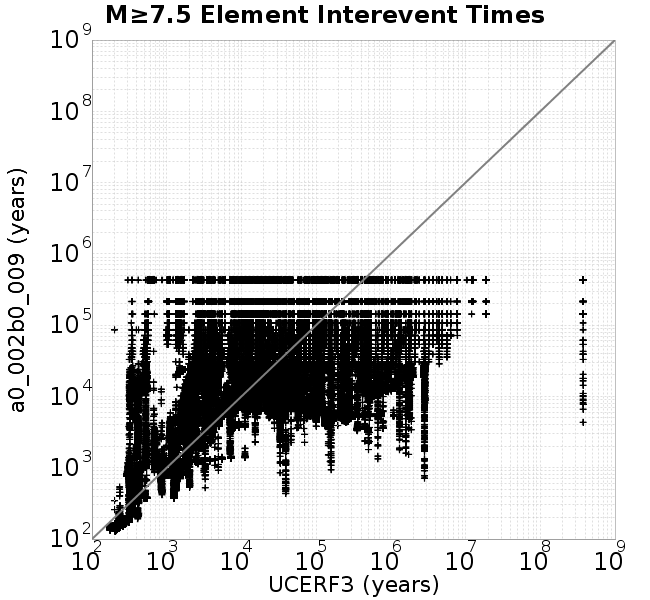 |  |
Subsections participate in a rupture if at least 20.0 % of its area ruptures
| Min Mag | Scatter | 2-D Hist |
|---|---|---|
| M≥6.0 |  | 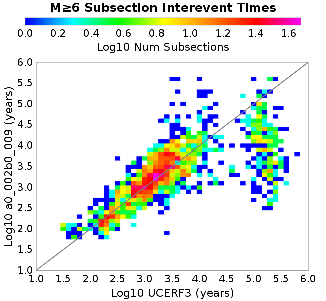 |
| M≥6.5 | 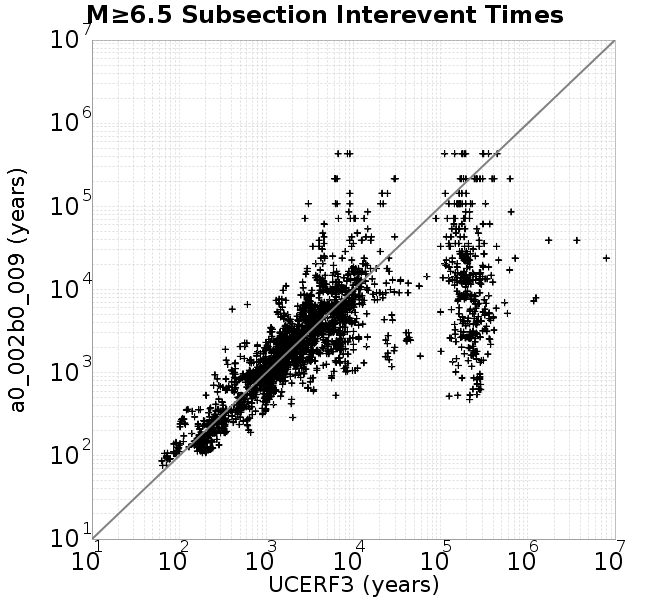 |  |
| M≥7.0 |  |  |
| M≥7.5 | 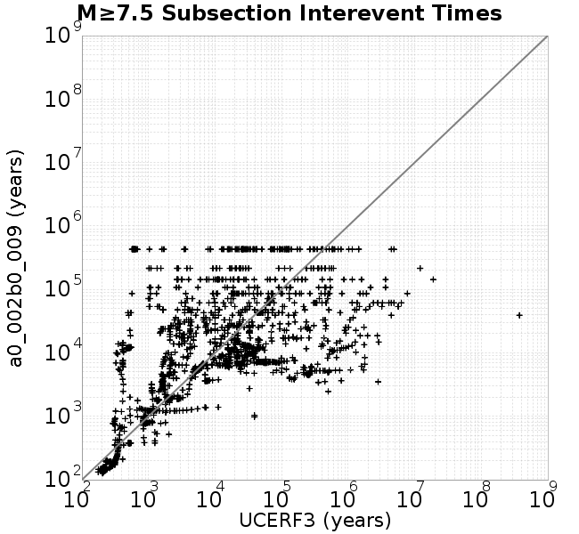 |  |
These plots use the 5 paleoseismic sites identified in Biasi & Scharer (2019) on the Hayward, N. SAF, S. SAF, and SJC faults. By default, a rupture is counted at a paleo site if the nearest element (at the surface) slips any amount. We also alternatively apply a probability of detection model. Those results are marked as 'Prob. Filtered'.
Paleoseismic sites table:
| Site Name | Data MRI (yr) | Data Annual Rate | Catalog MRI (yr) | Catalog Annual Rate | Catalog Occurences | Prob Filtered Catalog MRI (yr) | Prob Filtered Catalog Annual Rate | Prob Filtered Catalog Occurences |
|---|---|---|---|---|---|---|---|---|
| HOG | 191.00 | 0.005235602 | 362.22 | 0.002760723 | 1185 | 366.30 | 0.0027300168 | 1171.8 |
| FRA | 119.00 | 0.008403362 | 117.36 | 0.008520723 | 3657 | 122.98 | 0.008131078 | 3489.77 |
| COA | 181.00 | 0.005524862 | 177.90 | 0.005621096 | 2413 | 190.15 | 0.0052588712 | 2257.57 |
| SCZ | 106.00 | 0.009433962 | 121.30 | 0.008243762 | 3539 | 140.35 | 0.0071250997 | 3058.78 |
| TYS | 329.00 | 0.0030395137 | 345.27 | 0.0028963117 | 1244 | 384.14 | 0.0026032391 | 1118.16 |
| TOTAL | 31.61 | 0.0316373 | 35.66 | 0.028044647 | 12038 | 38.68 | 0.025852904 | 11097.27 |
Paleoseismic Plots:
| 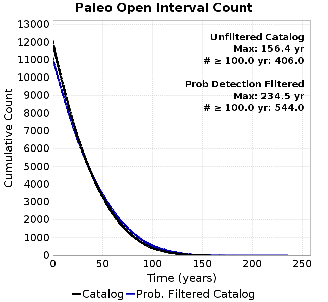 |  |
|---|
Open interval probabilities table:
| Open Interval (yr) | Catalog Probability | Catalog Poisson Probability | Prob. Filtered Catalog Probability | Prob. Filtered Catalog Poisson Probability | Data Poisson Probability |
|---|---|---|---|---|---|
| 10.00 | 0.9737308 | 0.7554464 | 0.9774576 | 0.7721866 | 0.72878754 |
| 20.00 | 0.900995 | 0.5706992 | 0.91423965 | 0.5962722 | 0.53113127 |
| 30.00 | 0.8050055 | 0.43113267 | 0.828541 | 0.46043336 | 0.3870819 |
| 40.00 | 0.69039136 | 0.3256976 | 0.72511905 | 0.35554048 | 0.28210047 |
| 50.00 | 0.5711422 | 0.24604708 | 0.61577135 | 0.27454358 | 0.2055913 |
| 60.00 | 0.44760606 | 0.18587537 | 0.4994146 | 0.21199888 | 0.14983238 |
| 70.00 | 0.3420387 | 0.14041889 | 0.39514259 | 0.1637027 | 0.10919597 |
| 80.00 | 0.24948019 | 0.10607894 | 0.30130303 | 0.12640904 | 0.079580665 |
| 90.00 | 0.1716609 | 0.08013695 | 0.21809922 | 0.09761136 | 0.057997398 |
| 100.00 | 0.10919331 | 0.060539167 | 0.14909856 | 0.075374186 | 0.04226778 |
| 110.00 | 0.070612356 | 0.045734093 | 0.10260264 | 0.058202937 | 0.030804234 |
| 120.00 | 0.038273174 | 0.034549657 | 0.062096894 | 0.044943526 | 0.022449743 |
| 130.00 | 0.017178206 | 0.026100412 | 0.032251947 | 0.03470479 | 0.016361093 |
| 140.00 | 0.0067478875 | 0.019717462 | 0.013931222 | 0.026798574 | 0.011923761 |
| 150.00 | 0.0015193044 | 0.014895486 | 0.004606104 | 0.0206935 | 0.008689889 |
| 160.00 | 0.0 | 0.01125274 | 0.0017653744 | 0.015979243 | 0.0063330824 |
| 170.00 | 0.0 | 0.008500842 | 9.40611E-4 | 0.012338958 | 0.0046154717 |
| 180.00 | 0.0 | 0.00642193 | 4.6873264E-4 | 0.009527978 | 0.0033636983 |
| 190.00 | 0.0 | 0.004851424 | 2.531729E-4 | 0.007357377 | 0.0024514215 |
| 200.00 | 0.0 | 0.0036649907 | 1.2964148E-4 | 0.005681268 | 0.0017865654 |
| 210.00 | 0.0 | 0.002768704 | 7.975711E-5 | 0.004386999 | 0.0013020267 |
| 220.00 | 0.0 | 0.0020916073 | 3.3297027E-5 | 0.0033875818 | 9.489008E-4 |
| 230.00 | 0.0 | 0.0015800972 | 7.960649E-6 | 0.0026158453 | 6.915471E-4 |
| 240.00 | 0.0 | 0.0011936787 | 0.0 | 0.0020199206 | 5.039909E-4 |
These plots use the full set of UCERF3 paleoseismic sites. By default, a rupture is counted at a paleo site if the nearest element (at the surface) slips any amount. We also alternativeslyapply a probability of detection model. Those results are marked as 'Prob. Filtered'.
Paleoseismic sites table:
| Site Name | Data MRI (yr) | Data Annual Rate | Catalog MRI (yr) | Catalog Annual Rate | Catalog Occurences | Prob Filtered Catalog MRI (yr) | Prob Filtered Catalog Annual Rate | Prob Filtered Catalog Occurences |
|---|---|---|---|---|---|---|---|---|
| SSanAndreasBurroFlats | 205.44 | 0.0048677 | 207.09 | 0.004828881 | 2072 | 236.42 | 0.0042298282 | 1814.85 |
| SSanAndreasIndio | 277.37 | 0.0036053 | 174.22 | 0.00573995 | 2464 | 185.15 | 0.0054011107 | 2318.59 |
| SSAFMCreek1000Palms | 261.33 | 0.0038266 | 1601.11 | 6.2456855E-4 | 268 | 2335.77 | 4.2812395E-4 | 183.6 |
| NSanAndreasFortRoss | 306.28 | 0.003265 | 189.90 | 0.0052658343 | 2261 | 192.46 | 0.005195766 | 2230.92 |
| NSanAndreasNorthCoast | 263.87 | 0.0037898 | 181.86 | 0.005498836 | 2361 | 186.37 | 0.005365572 | 2303.76 |
| CalaverasfaultNorth | 618.05 | 0.001618 | 164.85 | 0.0060662343 | 2604 | 237.12 | 0.0042172596 | 1810.1 |
| ElsinoreTemecula | 1019.16 | 9.812E-4 | 695.25 | 0.0014383259 | 617 | 723.17 | 0.0013828034 | 593.2 |
| ElsinoreWhittier | 3196.93 | 3.128E-4 | 1511.93 | 6.6140527E-4 | 283 | 1604.43 | 6.2327355E-4 | 266.72 |
| SSAFCarrizoBidart | 114.71 | 0.0087179 | 121.65 | 0.008220074 | 3528 | 125.28 | 0.007982075 | 3425.87 |
| SanJacintoHogLake | 311.78 | 0.0032074 | 362.22 | 0.002760723 | 1185 | 366.49 | 0.002728617 | 1171.21 |
| PuenteHills | 3506.31 | 2.852E-4 | 4980.73 | 2.007738E-4 | 85 | 5453.49 | 1.8336892E-4 | 77.55 |
| SanGregorioNorth | 1019.06 | 9.813E-4 | 393.00 | 0.0025445572 | 1092 | 407.53 | 0.0024537912 | 1053.01 |
| SanJacintoSuperstition | 508.26 | 0.0019675 | 1188.89 | 8.4112305E-4 | 361 | 1273.52 | 7.8522577E-4 | 337.03 |
| SSanAndreasWrightwood | 106.04 | 0.0094304 | 153.57 | 0.0065117343 | 2795 | 155.53 | 0.0064294357 | 2759.66 |
| SSanAndreasPitmanCanyon | 173.48 | 0.0057643 | 141.94 | 0.007045445 | 3024 | 158.70 | 0.0063013453 | 2704.7 |
| SSanAndreasPlungeCreek | 205.36 | 0.0048695 | 359.26 | 0.0027834661 | 1194 | 442.18 | 0.0022615439 | 969.96 |
| FrazierMountianSSAF | 148.57 | 0.0067307 | 117.36 | 0.008520723 | 3657 | 122.88 | 0.008138004 | 3492.74 |
| NSanAndreasSantaCruzSeg | 109.84 | 0.0091041 | 121.30 | 0.008243762 | 3539 | 140.44 | 0.0071203294 | 3056.76 |
| RodgersCreek | 325.31 | 0.003074 | 168.94 | 0.005919219 | 2541 | 231.64 | 0.0043171044 | 1853.31 |
| GreenValleyMasonRoad | 293.31 | 0.0034094 | 1761.92 | 5.6756247E-4 | 243 | 2367.54 | 4.2238022E-4 | 180.76 |
| HaywardfaultNorth | 318.34 | 0.0031413 | 372.05 | 0.0026877823 | 1153 | 382.60 | 0.0026136816 | 1121.24 |
| HaywardfaultSouth | 167.57 | 0.0059677 | 345.27 | 0.0028963117 | 1244 | 384.47 | 0.0026009765 | 1117.19 |
| Compton | 2658.16 | 3.762E-4 | 5283.71 | 1.8926096E-4 | 80 | 5968.77 | 1.6753864E-4 | 70.87 |
| SSanAndreasCoachella | 178.45 | 0.0056037 | 177.90 | 0.005621096 | 2413 | 190.23 | 0.0052568405 | 2256.67 |
| ElsinoreGlenIvy | 179.12 | 0.0055828 | 566.26 | 0.0017659691 | 758 | 613.77 | 0.0016292854 | 699.4 |
| GarlockCentralallevents | 1434.93 | 6.969E-4 | 640.66 | 0.0015608963 | 670 | 650.44 | 0.0015374144 | 659.91 |
| NSanAndreasAlderCreek | 869.64 | 0.0011499 | 189.74 | 0.005270494 | 2263 | 192.55 | 0.005193585 | 2229.95 |
| SSanAndreasPallettCreek | 149.30 | 0.006698 | 154.01 | 0.0064930893 | 2787 | 155.75 | 0.0064205127 | 2755.85 |
| GarlockWesternallevents | 1230.16 | 8.129E-4 | 836.44 | 0.001195537 | 513 | 857.70 | 0.0011659103 | 500.26 |
| ElsinoreFaultJulian | 3250.98 | 3.076E-4 | 1263.24 | 7.9161697E-4 | 339 | 1289.37 | 7.75572E-4 | 332.04 |
| TOTAL | 9.08 | 0.1101451 | 14.29 | 0.06996699 | 30032 | 15.90 | 0.06288467 | 26992.06 |
Paleoseismic Plots:
| 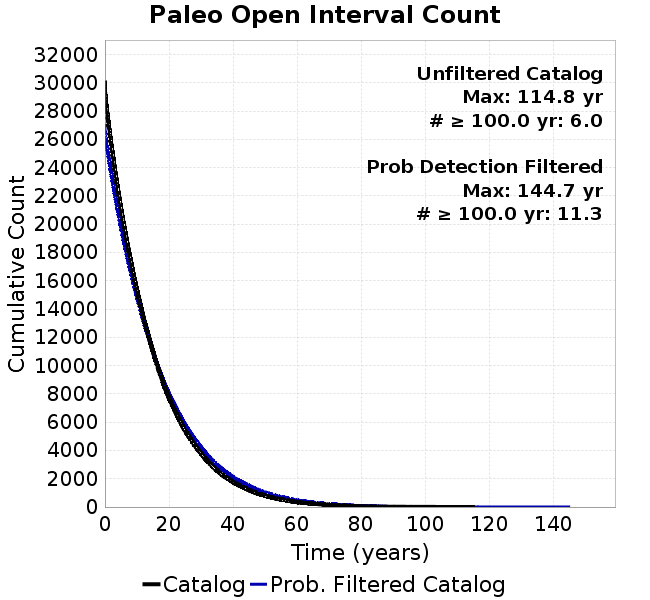 | 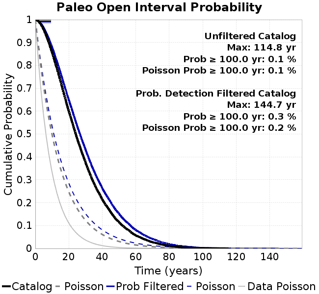 |
|---|
Open interval probabilities table:
| Open Interval (yr) | Catalog Probability | Catalog Poisson Probability | Prob. Filtered Catalog Probability | Prob. Filtered Catalog Poisson Probability | Data Poisson Probability |
|---|---|---|---|---|---|
| 10.00 | 0.856458 | 0.49674928 | 0.8788454 | 0.53320634 | 0.33238843 |
| 20.00 | 0.59924155 | 0.24675985 | 0.64812386 | 0.28430903 | 0.110482074 |
| 30.00 | 0.3755991 | 0.12257778 | 0.43157396 | 0.15159538 | 0.036722966 |
| 40.00 | 0.21360558 | 0.060890425 | 0.2620335 | 0.080831625 | 0.012206289 |
| 50.00 | 0.11507953 | 0.030247275 | 0.15132453 | 0.04309994 | 0.004057229 |
| 60.00 | 0.056784973 | 0.015025312 | 0.08039326 | 0.022981161 | 0.001348576 |
| 70.00 | 0.027217679 | 0.007463813 | 0.041807905 | 0.012253702 | 4.4825108E-4 |
| 80.00 | 0.011290993 | 0.0037076438 | 0.018772287 | 0.0065337517 | 1.4899348E-4 |
| 90.00 | 0.0043462585 | 0.0018417693 | 0.008379537 | 0.0034838382 | 4.952371E-5 |
| 100.00 | 0.001494637 | 9.148976E-4 | 0.0028519935 | 0.0018576047 | 1.6461108E-5 |
| 110.00 | 6.380982E-4 | 4.5447474E-4 | 0.001076415 | 9.904867E-4 | 5.4714824E-6 |
| 120.00 | 0.0 | 2.2576E-4 | 2.2027911E-4 | 5.281338E-4 | 1.8186574E-6 |
| 130.00 | 0.0 | 1.1214612E-4 | 2.2161894E-5 | 2.816043E-4 | 6.045007E-7 |
| 140.00 | 0.0 | 5.5708504E-5 | 5.621299E-6 | 1.5015321E-4 | 2.0092905E-7 |
| 150.00 | 0.0 | 2.7673159E-5 | 0.0 | 8.006265E-5 | 6.678649E-8 |
We first create a tapered moment release time series for the entire catalog. Each event's moment is distributed across a 25 year Hanning (cosine) taper. Here is a plot of a random 2,000 year section of this time series:
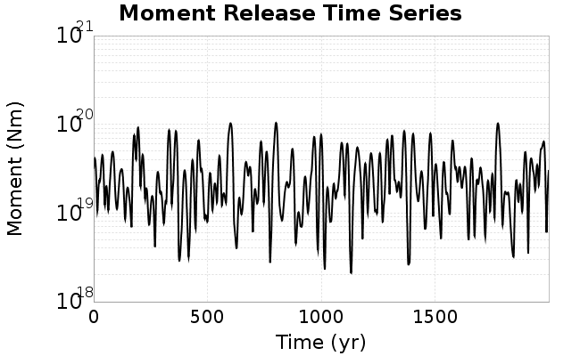
We then compute Welch's power spectral density estimate on the entire time series. Results are plotted below, with a Poisson randomization of the catalog also plotted in a gray line, and the 95% confidence bounds from 200 realizations as a light gray shaded area. Significant deviations outside the Poisson confidence intervals indicate synchronous behaviour.
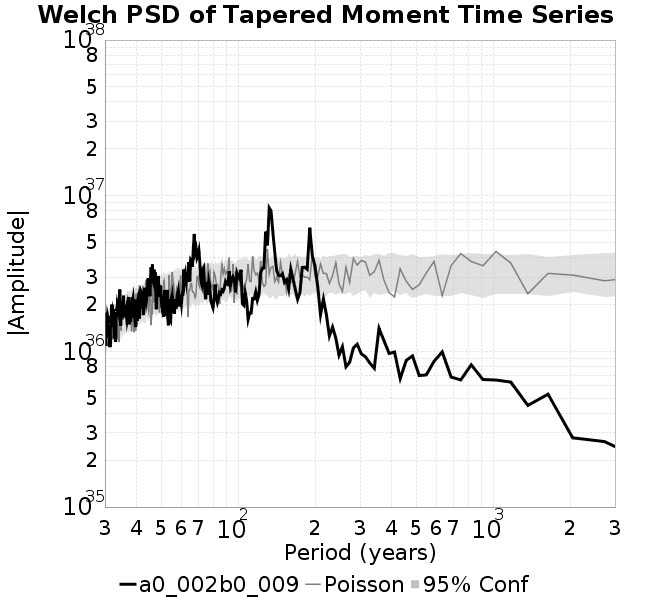
A_1 = 0.002
fA = .1
B_1 = 0.009
muSlipAmp_1 = .0
muSlipInvDist_1 = 1.0
cohesion = 0.0
Dc_1 = 1.0000000000000000818e-05
mu0_1 = 0.6
ddotStar_1 = 9.9999999999999995475e-07
ddotAB_1 = 9.9999999999999995475e-07
alpha_1 = 0.0
theta0_1 = 200000000
tau0_1 = 55.1
sigma0_1 = 100
sigmaFracPin = .5
lowSigmaAction = 1
maxThetaPin = 1.0e13
ddotEQ_1 = 1
ddotEQFname =
stressOvershootFactor = 0.10000000000000000555
lameLambda = 30000
lameMu = 30000
slowSlip_1 = 0
nEq = 100000000000
KZeroFrac = 0
muPin = 1.0
tStart = 0
maxT = 3.16e13
maxWallTime = 169200
maxTrans = 1.0000000000000000159e100
faultFname = UCERF3FM.15km.1km.tri.flt
outFnameInfix = a0_002b0_009
writeTau = 2
writeSigma = 2
writeSlip = 0
writeSlipSpeed = 0
writeState = 0
writeTheta = 2
writePED = 1
writeTransitions = 1
minDtWrite = 0
minDtWriteCoseismic = 0
minDtWriteInterseismic = 0
minMagWrite = 7.7
writeStiffness = 0
stressRateSpecification = 1
dMu3 = 0.01000000000000000
initTauFname =
initSigmaFname =
initThetaFname =
initSlipSpeedFname =
AFname =
BFname =
DcFname =
mu0Fname =
ddotStarFname =
ddotABFname =
alphaFname =
KTauFname = /u/sciteam/gilchris/scratch/stiffness_25a589d/Ktau.25a589d.out
KSigmaFname = /u/sciteam/gilchris/scratch/stiffness_25a589d/Ksigma.25a589d.out
tFailFname =
tauFailFname =
tauDotFname =
sigmaDotFname =
KZeroFname = UCERF3FM.15km.1km.tri.KZero
pinnedFname = UCERF3FM.15km.1km.tri.pin
neighborFname = UCERF3FM.15km.1km.tri.neighbors
stressRateFname =
slowSlipFname =
writePatchFname =
DEBUG = 0
ZBrentUpperBracket = 0
receiverElementAreaFrac = 0.8
receiverElementIntTol = 1.0e-4
receiverElementSubdivisionMax = 4
tgfDist1 = 3
tgfDist1 = 10
lowSigmaAction = 1
highSigmaAction = 0